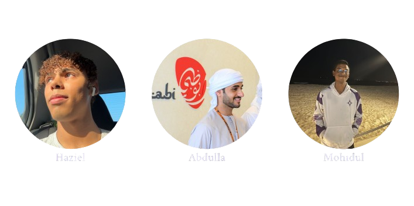

Where would you like to enjoy your coffee?
The "Behind the Counter" project was created by a team of students dedicated to capturing the essence of the backstage of BlackSmith. From scripting to filming, editing, and everything in between, our goal is to share our passion for coffee.
Get an exclusive peek into the making of "Behind the Counter". These unfiltered behind-the-scenes clips showcase the highs, lows, and unexpected moments that shaped our project.